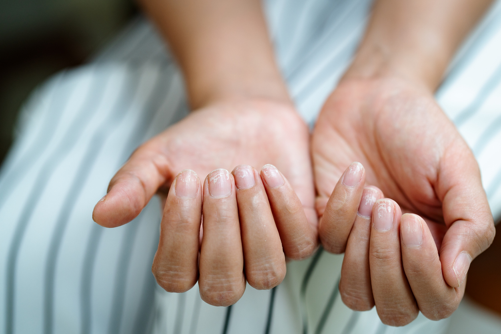

Blog
¡Lo bonito que es lucir una manicura envidiable! ¿verdad? Tus manos son tu carta de presentación y por ello
no hay nada mejor que cuidar tus uñas. Un bonito esmaltado, un color que te favorezca, un tamaño práctico y a
la moda, ¡serás la envidia de tus amigas! Pero claro, hay clientas que vienen con un mismo “problema”: sus
uñas no crecen lo suficiente, son débiles y se rompen pronto, ¿qué hacer en estos casos? Te contamos cómo
fortalecer tus uñas.
En Givemefive nos desvivimos porque luzcas unas uñas perfectas, esas manos que siempre has querido. Porque, en
realidad, no hay un motivo especial por el que venir a vernos, somos tu
salón de manicura en Barcelona. Presumir de uñas perfectas en algo
que debes tener en cuenta en tu día a día, tengas el trabajo que tengas y realices las acciones que hagas al cabo del día.
Está claro que cuando nos dedicamos a trabajos más manuales o artesanales es preciso no escatimar en cuidados.
Eso quiere decir trabajar con guantes o no manipular sin le debida protección materiales demasiados abrasivos
para nuestras uñas. Y es que, cada persona somos de una manera diferente, nuestro cuerpo también y, cómo no,
nuestras uñas también. Es necesario que aprendas a fortalecer tus uñas.
Porque no es lo mismo como luce una manicura con unas uñas sanas y fuertes que unas uñas que, a la mínima, se
rompen. Si quieres presumir de uñas al más puro estilo Rosalía (o algo más discretas) nosotros te ayudamos
pero necesitas, por ti misma, saber cómo fortalecer tus uñas y que éstas sean sinónimo de salud, higiene,
belleza y elegancia.

Cómo tener unas uñas más fuertes
1. Nútrelas. Existen en el mercado cremas especiales para fortalecer manos y uñas, éstas deben ser todo
un oufit en tu bolso. Nutre tus manos a diario, opta por marcas de calidad y aplícatelas cada vez que te laves
las manos para que su efecto con el tiempo haga que tus uñas sean más fuertes.
2. Cuida tu alimentación. La alimentación es la base de nuestra salud, no hay duda, y también de la de
tus manos. Para fortalecer tus uñas opta por fomentar una dieta con alimentos ricos en vitamina A y B como
pueden ser cereales, levadura de cerveza, tomates, pimientos rojos, nueces, leche, zanahoria, almendras y
pescados.
3. La leche es fundamental. Existe un mito que en ocasiones ha sido desterrado por algunos y que es la
leche es buena para tus uñas. Y sí, lo es. Porque contiene importantes aportes de calcio, un elemento
indispensable para el crecimiento de tus uñas. No lo olvides.
4. No a los pintauñas de mala calidad. A veces nos dejamos llevar por pintauñas que nos gustan por su
tonalidad y sobre todo por su precio y ojo, no todo vale a la hora de decorar y pintar tus uñas. Acude a tu
salón de manicura en Barcelona Givemefive donde utilizamos productos de calidad y podrás presumir de uñas
radiantes más tiempo sin necesidad de maltratarlas.
5. Cuidado en cómo quitas el esmalte. Ojo porque este sencillo paso podría estar haciendo que tus uñas
sean más frágiles de lo normal, ¿lo sabías? Elige siempre productos suaves que no tengan acetona ya que
debilitan la keratina de las uñas y las resecan. Si que es cierto que la acetona te ahorra tiempo pero a la
larga “mata” la calidad de tu uña.
6. Mascarillas caseras. Aunque debes tener mucho cuidado con los trucos caseros que encuentres por ahí
sí es cierto que hay algunos infalibles como por ejemplo el que aquí te presentamos. Debes mezclar un diente
de ajo con aceite de oliva y zumo de limón, machácalo todo hasta conseguir una pasta. Guarda esta mascarilla
en un bote limpio y aplícala sobre tus uñas siempre que puedas. Tus uñas más fuertes.
7. Las uñas al sol. Qué duda cabe que el astro rey es un buen aliado para nuestra salud en general, al
menos en dosis adecuadas. Y es que sus rayos ayudan a la asimilación de vitaminas esenciales para la piel, el
cabello y cómo no: nuestras uñas.
8. Padastros, moderte las uñas... Y otros hábitos que consciente o inconscientemente hacemos y que lo
que están provocando es que no se fortalezcan las uñas como debieran. Si llevas a cabo un mantenimiento
esencial en casa mucho cuidado a la hora de retirar padastros, moderte las uñas, en utilizar según que
herramientas… porque tus uñas podrían estar en peligro y quizás creciendo menos de lo que esperabas.
9. El agua es un enemigo de tus uñas. De ahí que utilices guantes o un lavavajillas si tienes que
limpiar los platos por ejemplo, sobre todo si el agua está helada. Date cuenta de una cosa: el agua lo que
hace es provocar que las uñas se sequen y se debiliten y de ahí a que se rompan hay un mínimo paso. ¡Toma
nota!